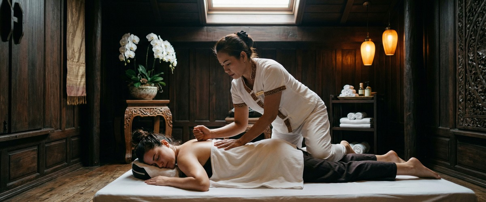
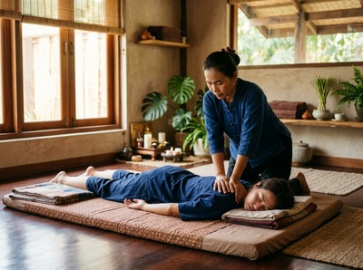

That deep, aching stiffness that sets in the day after a hard workout, a long day on your feet, or an unfamiliar physical effort is one of the most common reasons people seek massage therapy.

Sore muscles affect almost everyone who is physically active. They can stop your training, disturb your sleep, and make everyday movement genuinely uncomfortable. Thai massage offers a proven, targeted way to refresh sore muscles and speed your return to full function.
Delayed onset muscle soreness (DOMS) is caused by tiny damage to muscle fibres during intense or unfamiliar exercise. It typically develops 24 to 72 hours after activity. It is most common after movements that lengthen a muscle under load — walking downhill, lowering weights, or the descent of a squat.

The fibres sustain small-scale damage, which triggers local inflammation and the familiar stiffness, tenderness, and reduced movement.
DOMS is not an injury. It is a normal response to physical effort and a sign that muscles are adapting. Even so, the discomfort can be significant. Without any help, it can last anywhere from two to five days.
Massage is one of the most well-researched tools for easing muscle soreness. A review published in Frontiers in Physiology on massage and delayed onset muscle soreness found that massage clearly reduced soreness at 24, 48, and 72 hours after exercise. The review drew on 11 controlled trials involving 504 participants. That makes it one of the strongest cases available for massage as a recovery tool.
The effect works on several levels. Therapeutic pressure improves local blood flow, clears waste products from the tissue, and brings in oxygen and nutrients. Assisted stretching — a core part of Traditional Thai Massage — lengthens tight muscle fibres and restores joint movement that soreness restricts.
Thai Oil Massage uses flowing strokes to warm the tissue and reduce swelling in the muscle. Thai Sports Massage goes deeper, using cross-fibre techniques to break up adhesions and speed repair in specific muscle groups. Together, these approaches target both the structural and circulatory causes of soreness. They do not simply mask the discomfort.
At Thai Massage Greenock on South Street in Greenock, Jariya starts every session with a short consultation. She asks where you are sore and what caused it. This shapes the whole treatment.
For general post-exercise recovery, a session will typically combine assisted stretching through the legs, hips, and lower back with targeted pressure on the most affected areas. You can book your recovery session online and note the areas giving you trouble in advance.
Jariya trained at Bangkok's Wat Po temple, where the approach is to treat the whole body as one connected system. So even when your quads or calves are the main concern, the session will also work through the related muscle chains in the hips and back. This improves overall recovery rather than offering short-term local relief.
Clients across Inverclyde return regularly because the results build over time. Range of motion improves, recovery times shorten, and soreness becomes less severe with each session.
Anyone who pushes their body physically can benefit. But some groups find regular massage especially useful: runners and cyclists training for distance events; gym-goers who have recently increased load or changed their programme; manual workers in construction, landscaping, or warehousing who carry physical fatigue through the week.
People returning to exercise after a break and sports players in football, rugby, or swimming who train hard across multiple sessions also see strong results. You can arrange your appointment online and get ahead of the soreness before it peaks.
The ideal window is 24 to 48 hours after the activity that caused soreness. By then, the acute inflammation has settled slightly and massage can make a real difference. Booking too soon — within the first few hours after intense effort — is not recommended. Tissue can be acutely inflamed and very sensitive to pressure at that stage.
Some clients notice a mild increase in tenderness for 12 to 24 hours after a session that targets very sore muscles. This is a normal response to increased blood flow and tissue movement. It is not a sign of damage. It passes quickly and is followed by a clear drop in soreness and better mobility.
Thai Sports Massage is built for muscle recovery. It uses targeted pressure and cross-fibre work on the affected tissue. Traditional Thai Massage works well for full-body soreness, combining assisted stretching with pressure along the whole muscle chain. For a gentler option, Thai Oil Massage offers relief through flowing strokes and sustained warmth across tired muscles. Jariya can advise on the best approach for your situation.
One session will bring noticeable relief. But two or three sessions spaced a few days apart gives the most consistent recovery, especially after a hard block of training or physical work. Over time, regular massage reduces how often and how severely soreness occurs. It does this by improving muscle flexibility and circulation between sessions.
Massage is generally safe for standard delayed onset muscle soreness, even when it is significant. If soreness is extreme, involves swelling or discolouration, or has not resolved within five to seven days, speak to a GP before booking. These signs can occasionally point to more serious muscle damage. Jariya will always adapt pressure and technique to your comfort level on the day.
Regular massage will not remove soreness entirely. Some post-exercise stiffness is a natural part of how muscles adapt. However, consistent sessions improve muscle flexibility, blood flow, and tissue quality. This reduces how severe and how long soreness lasts. Many clients at Thai Massage Greenock find that monthly or fortnightly sessions keep recovery times noticeably shorter. Book a regular session to make recovery part of your training plan.